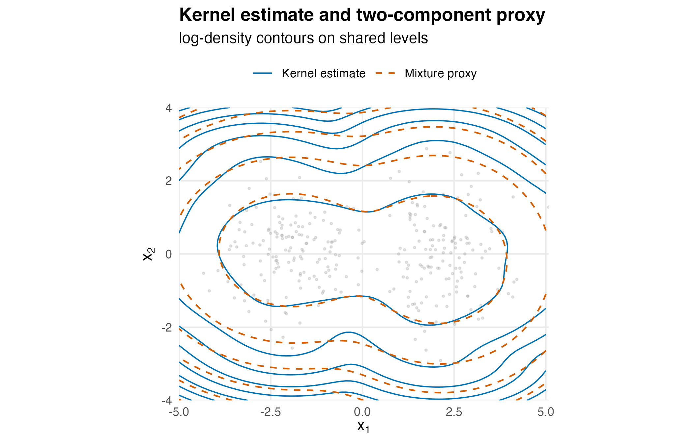

has_ggplot2 <- requireNamespace("ggplot2", quietly = TRUE)The problem
A kernel density estimate turns a sample into a smooth density without assuming a shape for it. It places a small normal bell curve, called a kernel, on every data point and averages them. The width of the kernels is called the bandwidth. A narrow bandwidth keeps every bump in the sample, and a wide one smooths them away.
The estimate from 300 data points is therefore a mixture of 300 normal distributions. Both its density at a point and the distribution of one variable when another is held at a fixed value involve all 300 of them. The work grows with the size of the sample. This matters when an analysis repeats such steps many times.
proxymix replaces the estimate with a mixture of a few normal distributions, for example two or five, chosen to be as close to the estimate as possible. This smaller mixture is called the proxy. The same steps on the proxy involve only its few components.
This vignette compresses the estimate of a sample from two groups, measures what the compression loses, and compares the result with five other R packages.
Package capabilities
-
from_kde()builds the kernel density estimate from a data matrix and compresses it into anN-component Gaussian mixture, a sum ofNnormal distributions. Itsbandwidthargument takes a rule of thumb by name ("silverman"or"scott", after Silverman, 1986, and Scott, 1992) or numbers, a single number for all variables or one number per variable. -
from_kde()fits the proxy with the package’s method for a density that can be evaluated but not sampled (van der Hoek and Elliott, 2024), described in Fitting a proxy to a density you cannot sample. It drawsis_sizetrial points from a simple wide distribution and weights each by how likely it is under the estimate,10000 + 2500 * Npoints by default. It also draws fresh points that are not used in the fit. By default it adds them in batches ofis_sizeuntil the KL estimate is precise, up to10 * is_sizepoints. -
ess_summary()reports the quality of the weighted draws and the Kullback-Leibler (KL) divergence between the proxy and the estimate, measured on the fresh draws (validation_kld). The KL divergence is zero when two densities match and grows as they differ. -
hellinger_mc()estimates a second distance between the proxy and the estimate, the squared Hellinger distance, from fresh random draws. It lies between 0, for identical densities, and 1. -
dgmm(),rgmm(),gmm_marginalise()andgmm_conditionalise()give density values, random draws, the distribution of one variable on its own, and the distribution of one variable when another is held fixed.gmm_affine()gives the distribution of a linear transformation of the variables, andgmm_observe()updates the proxy after a measurement with normal noise.
Addressing the problem
A sample from two groups
The data are simulated, so the true density is known. Half of the 300
points come from a normal distribution centred at
and half from one centred at
,
both with unit variances and no correlation. The call fits a proxy with
two components and uses Silverman’s rule for the bandwidth. It sets
is_size and validation_size below their
defaults to keep the vignette fast.
set.seed(20260601)
n_each <- 150L
true_means <- cbind(c(-2, 0), c(2, 0))
true_cov <- diag(2)
x <- rbind(
mvnfast::rmvn(n_each, mu = true_means[, 1L], sigma = true_cov),
mvnfast::rmvn(n_each, mu = true_means[, 2L], sigma = true_cov)
)
fit <- from_kde(
x, N = 2L,
bandwidth = "silverman",
is_size = 2000L, max_iter = 60L, seed = 1L,
validation_size = 2000L
)
fit
#> <gmm_fit>: regime = "kld", K = 2, p = 2
#> target : from_kde
#> iterations : 10
#> converged : TRUE
#> [1] w = 0.5225, |mu| = 2.0526, tr(Sigma) = 2.7785
#> [2] w = 0.4775, |mu| = 1.9564, tr(Sigma) = 2.6586The recovered groups
Sorting the two fitted components by their first coordinate puts them in the same order as the true groups.
mu_hat <- vapply(fit@means, function(mu) mu, numeric(2L))
comp_order <- order(mu_hat[1L, ])
mu_hat <- mu_hat[, comp_order, drop = FALSE]
weight_hat <- fit@weights[comp_order]
mean_error <- max(abs(mu_hat - true_means))| Component | Fitted | Fitted | True | True | Weight |
|---|---|---|---|---|---|
| 1 | -1.954 | 0.105 | -2 | 0 | 0.478 |
| 2 | 2.046 | -0.159 | 2 | 0 | 0.522 |
Check the fit
The effective sample size is the number of equally weighted draws that the weighted draws are worth. It should be close to the number of draws, and no single draw should carry much of the weight. The KL divergence is reported on the fresh draws, with its Monte Carlo standard error, the random error due to the finite number of draws. The KL divergence on the draws used for fitting reads too low, because the fit was tuned to those draws.
es <- ess_summary(fit)
print(data.frame(is_size = es$is_size, ess = round(es$ess, 1),
ess_relative = round(es$ess_relative, 3),
max_weight = signif(es$max_weight, 3)),
row.names = FALSE)
#> is_size ess ess_relative max_weight
#> 2000 1538 0.769 0.00116
print(data.frame(validation_size = es$validation_size,
validation_kld = signif(es$validation_kld, 3),
validation_se = signif(fit@diagnostics$validation_mc_se, 3)),
row.names = FALSE)
#> validation_size validation_kld validation_se
#> 2000 0.016 0.00449What the compression loses
The proxy and the kernel estimate are both densities on the same plane, so the gap between them can be added up on a fine grid. The total variation distance is half the total absolute gap. It is the largest difference between the probabilities that the two densities give to any region. The squared Hellinger distance comes from 10,000 fresh draws from the proxy.
g1 <- seq(-6, 6, length.out = 160L)
g2 <- seq(-5, 5, length.out = 140L)
grid <- expand.grid(x1 = g1, x2 = g2)
gm <- as.matrix(grid)
cell <- (g1[2L] - g1[1L]) * (g2[2L] - g2[1L])
grid$kde <- exp(fit@target@log_density(gm))
grid$proxy <- dgmm(gm, fit)
total_variation <- 0.5 * sum(abs(grid$kde - grid$proxy)) * cell
hell <- hellinger_mc(fit, n_mc = 10000L, seed = 1L)
c(total_variation = signif(total_variation, 3),
hellinger_sq = signif(hell$h2, 3), hellinger_se = signif(hell$se, 3))
#> total_variation hellinger_sq hellinger_se
#> 0.06250 0.00373 0.00090The figure shows where the two densities differ. Both are drawn on the log scale with the same contour levels.
plot_grid <- expand.grid(
x1 = seq(-5, 5, length.out = 80L),
x2 = seq(-4, 4, length.out = 60L)
)
pm <- as.matrix(plot_grid)
plot_grid$kde <- fit@target@log_density(pm)
plot_grid$proxy <- log(dgmm(pm, fit))
## Shared contour levels so the two log-densities are directly comparable.
brks <- pretty(range(c(plot_grid$kde, plot_grid$proxy), finite = TRUE), 9L)
sample_df <- data.frame(x1 = x[, 1L], x2 = x[, 2L])
ggplot2::ggplot() +
ggplot2::geom_point(data = sample_df, ggplot2::aes(x1, x2),
colour = "grey60", alpha = 0.25, size = 0.5) +
ggplot2::geom_contour(
data = plot_grid,
ggplot2::aes(x1, x2, z = kde, colour = "Kernel estimate",
linetype = "Kernel estimate"),
breaks = brks, linewidth = 0.45
) +
ggplot2::geom_contour(
data = plot_grid,
ggplot2::aes(x1, x2, z = proxy, colour = "Mixture proxy",
linetype = "Mixture proxy"),
breaks = brks, linewidth = 0.55
) +
ggplot2::scale_colour_manual(
name = NULL,
values = c("Kernel estimate" = "#0072B2", "Mixture proxy" = "#D55E00")
) +
ggplot2::scale_linetype_manual(
name = NULL,
values = c("Kernel estimate" = "solid", "Mixture proxy" = "dashed")
) +
ggplot2::coord_equal(expand = FALSE) +
ggplot2::labs(
title = "Kernel estimate and two-component proxy",
subtitle = "log-density contours on shared levels",
x = expression(x[1]), y = expression(x[2])
) +
ggplot2::theme_minimal(base_size = 11) +
ggplot2::theme(plot.title = ggplot2::element_text(face = "bold"),
legend.position = "top",
panel.grid.minor = ggplot2::element_blank())
Contours of the log-density of the kernel estimate (blue, solid) and of the two-component proxy (orange, dashed), on shared levels, over the 300 data points (grey). Around the two group centres the contours nearly coincide. On the outer, low-density levels the kernel estimate bends around single outlying points, and the proxy stays smooth.
Use the proxy
gmm_conditionalise(given = c(NA, 0)) gives the
distribution of
when
equals 0, with NA marking the variable left free. The
result is a mixture with the proxy’s two components, and
rgmm() draws from it in one call.
slice <- gmm_conditionalise(fit, given = c(NA, 0))
draws <- rgmm(200L, slice)
c(components = gmm_n_components(slice), dimension = gmm_dim(slice),
draws = nrow(draws))
#> components dimension draws
#> 2 1 200The effect of the bandwidth
The proxy has the same smoothing as the estimate it compresses. The
code below compresses the same sample with three bandwidths, at 1,500
weighted draws. By default the fresh draws are added in batches until
the standard error of the KL divergence is at most a tenth of the
estimate, or at most 0.001 when the estimate is below 0.01, up to ten
times is_size draws.
bandwidth_grid <- c(0.2, 0.5, 1.0)
fits <- lapply(bandwidth_grid, function(h) {
from_kde(x, N = 2L, bandwidth = h,
is_size = 1500L, max_iter = 40L, seed = 1L)
})
sweep_is <- fits[[1L]]@diagnostics$is_size
sweep_vs <- vapply(fits, function(f) f@diagnostics$validation_size,
numeric(1L))
sweep_val <- vapply(fits, function(f) f@diagnostics$validation_kld,
numeric(1L))
sweep_se <- vapply(fits, function(f) f@diagnostics$validation_mc_se,
numeric(1L))| Bandwidth | Effective sample size | Largest weight | Spread of left component | Fresh draws | KL, fresh draws | Standard error |
|---|---|---|---|---|---|---|
| 0.2 | 791.4 | 0.00313 | 1.675 | 3000 | 0.20 | 0.017 |
| 0.5 | 1019.0 | 0.00172 | 2.077 | 9000 | 0.030 | 0.0028 |
| 1.0 | 1205.3 | 0.00124 | 3.443 | 10500 | 0.0061 | 0.00098 |
Comparison with ks, np, KernSmooth, mclust and mixtools
In a simulation, from_kde() was compared with three
kernel estimators and two packages that fit a Gaussian mixture directly
to the data. ks (Duong, 2007) computed the kernel estimate with a
bandwidth set from the data by a formula, its plug-in rule.
from_kde() compressed that same estimate at 3, 5 and 8
components. KernSmooth (Wand and Jones, 1995) computed the same estimate
on a grid by binning the data, and np (Hayfield and Racine, 2008) chose
its own bandwidths by cross-validation. mclust (Scrucca et al., 2016)
chose its number of components by the Bayesian information criterion
(BIC), a score that trades fit against the number of parameters.
mixtools (Benaglia et al., 2009) was given the true number, three. Each
method estimated the density of 100 datasets of 500 points, drawn from a
known mixture of three normal distributions in two dimensions. The
measure is the integrated squared error: the squared gap between the
estimated and the true density, added up over the plane. Smaller is
better, and zero is a perfect estimate.
| Method | Error | Difference from ks | Seconds per fit |
|---|---|---|---|
| ks | 1.689 (0.042) | 0.197 | |
| KernSmooth | 1.689 (0.042) | -0.0004 (0.0002) | 0.011 |
| np | 1.666 (0.042) | -0.0227 (0.0089) | 0.256 |
| proxymix, 3 components | 1.315 (0.037) | -0.3742 (0.0209) | 1.007 |
| proxymix, 5 components | 1.525 (0.040) | -0.1637 (0.0190) | 1.180 |
| proxymix, 8 components | 1.692 (0.046) | 0.0028 (0.0163) | 1.549 |
| mclust, components by BIC | 0.969 (0.043) | -0.7197 (0.0468) | 0.629 |
| mixtools, 3 components | 0.776 (0.108) | -0.9127 (0.1164) | 9.333 |
At 3 and 5 components, the proxy had a smaller error than all three kernel estimators: 1.31 and 1.53 thousandths, against 1.67 to 1.69. A proxy with few components cannot follow the random bumps in the kernel estimate. Here that smoothing moved it closer to the truth. At 8 components the proxy was level with ks (difference 0.003, standard error 0.016) and slightly behind np. mclust and mixtools, which fit a mixture to the data directly, had the smallest errors of all, 0.97 and 0.78 thousandths. Unlike mclust, mixtools did not have to choose the number of components. The true density in this design is itself a mixture of three normal distributions, which favours every method that fits a mixture.
proxymix took 1.01 to 1.55 seconds per fit, slower than ks (0.20), np (0.26), KernSmooth (0.011) and mclust (0.63), and faster than mixtools (9.3). Query times were measured on the Old Faithful data (Azzalini and Bowman, 1990) and the Palmer penguins data (Gorman et al., 2014; Horst et al., 2022), as the median of five timings on one computer, averaged over the two datasets. A query here is the conditional mean and the 90% conditional quantile of one variable given the other. On the three-component proxy a query took 0.46 milliseconds (ms). That is about 32 times faster than the 14.8 ms for the ks estimate evaluated on a grid of 401 points, and about 19 times slower than the 0.025 ms for the KernSmooth grid. Queries on the mixtures from mclust and from mixtools, here with two components, took 0.44 and 0.37 ms, and queries on np took 1.67 ms.
The code below fits one simulated dataset with all six packages and computes the integrated squared error of each. It repeats the simulation code for a single dataset. It needs ks, np, mclust and mixtools from CRAN (KernSmooth ships with R), and it is not run when this vignette is built.
library(proxymix)
library(mclust)
library(mixtools)
library(np)
options(np.messages = FALSE)
# one dataset of 500 points from a mixture of three normal distributions
truth <- list(
weights = c(0.35, 0.35, 0.30),
means = list(c(-2, 0), c(2, 1), c(0, 4)),
covs = list(diag(2), matrix(c(1, 0.5, 0.5, 1), 2L), 0.6 * diag(2))
)
set.seed(1L)
n <- 500L
k <- sample.int(3L, n, replace = TRUE, prob = truth$weights)
x <- matrix(NA_real_, n, 2L)
for (j in seq_len(3L)) {
s <- k == j
x[s, ] <- mvnfast::rmvn(sum(s), truth$means[[j]], truth$covs[[j]])
}
# integrated squared error against the true density, on a grid
g1 <- seq(-6, 6, length.out = 121L)
g2 <- seq(-4, 8, length.out = 121L)
grid <- as.matrix(expand.grid(x1 = g1, x2 = g2))
cell <- (g1[2L] - g1[1L]) * (g2[2L] - g2[1L])
f_true <- Reduce(`+`, lapply(seq_len(3L), function(j) {
truth$weights[j] * mvnfast::dmvn(grid, truth$means[[j]], truth$covs[[j]])
}))
ise <- function(f_hat) sum((f_hat - f_true)^2) * cell
as_gmm <- function(w, mu, sigma) {
gmm(weights = w, means = mu, covariances = sigma)
}
# ks with its diagonal plug-in bandwidth, and proxymix compressing the same estimate
h <- sqrt(diag(ks::Hpi.diag(x)))
kd <- ks::kde(x, H = diag(h^2), eval.points = grid)
f <- from_kde(x, N = 3L, bandwidth = h, is_size = 20000L, seed = 1L)
mc <- Mclust(x, verbose = FALSE)
g_mc <- as_gmm(
mc$parameters$pro,
lapply(seq_len(mc$G), function(j) mc$parameters$mean[, j]),
lapply(seq_len(mc$G), function(j) mc$parameters$variance$sigma[, , j])
)
mt <- mvnormalmixEM(x, k = 3L)
nd <- npudens(npudensbw(x))
f_np <- predict(nd, newdata = data.frame(grid))
bk <- KernSmooth::bkde2D(x, bandwidth = h, gridsize = c(121L, 121L),
range.x = list(range(g1), range(g2)))
1000 * c(ks = ise(kd$estimate),
proxymix = ise(dgmm(grid, f)),
mclust = ise(dgmm(grid, g_mc)),
mixtools = ise(dgmm(grid, as_gmm(mt$lambda, mt$mu, mt$sigma))),
np = ise(f_np),
KernSmooth = ise(as.vector(bk$fhat)))The extended version of this article gives the full simulation and the conditional queries on the Old Faithful and Palmer penguins data.
Interpretation
The proxy recovers the two groups the 300 points came from. Its means differ from the true means by at most 0.16, and its weights are 0.478 and 0.522, against 0.5 for each group.
The diagnostics of the weighted draws show no problem. The effective sample size was 1538 out of 2000, or 77 per cent, and the heaviest single draw held 0.0012 of the total weight. On 2000 fresh draws the KL divergence between the proxy and the kernel estimate was 0.016, with a standard error of 0.0045.
The total variation distance between the kernel estimate and the proxy is 0.062. The two densities therefore give any region probabilities that differ by at most about 6.2 percentage points. The squared Hellinger distance is 0.0037, with a standard error of 0.0009, about 4 standard errors above zero. The figure shows where the difference lies: in the outer, low-density region, where the kernel estimate follows single points. The gain is in size: the conditional distribution computed above has 2 components. The same conditional of the kernel estimate also has an exact formula, but it has 300 components.
The bandwidth affects the proxy as it affects the estimate. A wider bandwidth gives a smoother estimate that is easier to fit. The effective sample size rises from 791 at bandwidth 0.2 to 1205 at bandwidth 1.0, out of 1500 draws. The spread of the left-hand component grows from 1.67 to 3.44, because the proxy copies the extra smoothing. The KL divergence on fresh draws falls from 0.2 at bandwidth 0.2 to 0.03 at bandwidth 0.5. At the narrowest bandwidth the estimate keeps the bumps of the sample, which two components cannot follow. At bandwidth 1.0 the KL divergence on fresh draws is 0.0061, with a standard error of 0.001. It is small but above zero: two components do not reproduce even the smoothest of the three estimates exactly.
Limitations
from_kde() is tested for up to five variables. It warns
between six and ten and refuses more than ten. Weighted trial draws lose
efficiency quickly as the number of variables grows. This vignette uses
two. For more variables, fit a proxy in a few variables and extend it
with gmm_affine() and the other exact operations
instead.
The bandwidth must be one number or one number per variable. A full
bandwidth matrix, with correlations, is not supported. Such a matrix
acts like a covariance estimate. If that is what you want, fit the
mixture to the data directly with
fit_proxymix(regime = "sample").
A kernel estimate always integrates to one, and
from_kde() marks it as normalised. Because of this, the KL
divergence and the Hellinger distance above measure the gap itself. For
a density that is not normalised, both are off by an unknown amount.
from_kde() does not choose the bandwidth. Choose it with
a rule of thumb, by name, or by cross-validation outside the package,
and pass it in. The proxy keeps the errors of the estimate it
compresses, including those due to the bandwidth.
When the aim is only a Gaussian mixture for a sample, fitting the
mixture to the data directly is simpler and does not need weighted trial
draws. In the comparison above, mclust and mixtools also reached a
smaller error. from_kde() is useful when the kernel
estimate itself is a step in the analysis, and later steps need its
conditionals or marginals many times.
The comparison covers one well-separated mixture in two dimensions, one sample size and one bandwidth rule. Heavier tails, overlapping groups, more variables and bandwidths chosen by cross-validation were not tested. The query times come from two real datasets on one computer and change from run to run.
Further reading
Choosing between the three fitting regimes explains the
method from_kde() uses and what fitting a mixture directly
to the same data would do instead.
The closed-form operator calculus on a mixture covers the exact operations, such as conditioning and linear transformation, that the proxy makes available.
One mixture, many methods places the kernel estimate and the compressed proxy on one scale, from a single component to one component per data point.
References
Azzalini, A. and Bowman, A. W. (1990). A look at some data on the Old Faithful geyser. Applied Statistics 39(3), 357–365. https://doi.org/10.2307/2347385.
Benaglia, T., Chauveau, D., Hunter, D. R. and Young, D. S. (2009). mixtools: An R package for analyzing finite mixture models. Journal of Statistical Software 32(6), 1–29. https://doi.org/10.18637/jss.v032.i06.
Duong, T. (2007). ks: Kernel density estimation and kernel discriminant analysis for multivariate data in R. Journal of Statistical Software 21(7), 1–16. https://doi.org/10.18637/jss.v021.i07.
Gorman, K. B., Williams, T. D. and Fraser, W. R. (2014). Ecological sexual dimorphism and environmental variability within a community of Antarctic penguins (genus Pygoscelis). PLoS ONE 9(3), e90081. https://doi.org/10.1371/journal.pone.0090081.
Hayfield, T. and Racine, J. S. (2008). Nonparametric econometrics: The np package. Journal of Statistical Software 27(5), 1–32. https://doi.org/10.18637/jss.v027.i05.
Hoek, J. van der and Elliott, R. J. (2024). Mixtures of multivariate Gaussians. Stochastic Analysis and Applications. https://doi.org/10.1080/07362994.2024.2372605.
Horst, A. M., Presmanes Hill, A. and Gorman, K. B. (2022). Palmer Archipelago penguins data in the palmerpenguins R package: An alternative to Anderson’s irises. The R Journal 14(1), 244–254. https://doi.org/10.32614/RJ-2022-020.
Scott, D. W. (1992). Multivariate Density Estimation: Theory, Practice, and Visualization. Wiley.
Scrucca, L., Fop, M., Murphy, T. B. and Raftery, A. E. (2016). mclust 5: Clustering, classification and density estimation using Gaussian finite mixture models. The R Journal 8(1), 289–317. https://doi.org/10.32614/RJ-2016-021.
Silverman, B. W. (1986). Density Estimation for Statistics and Data Analysis. Chapman and Hall.
Wand, M. P. and Jones, M. C. (1995). Kernel Smoothing. Chapman and Hall.
Reproduce
The data are generated with seed 20260601, and every
from_kde() call passes seed = 1L, so the
weighted draws are reproducible. hellinger_mc() uses its
own seed = 1L. The comparison is read from stored results
of a simulation run under proxymix 0.16.0, ks 1.15.3, np 0.70-5,
KernSmooth 2.23-27, mclust 6.1.3 and mixtools 2.0.0.1, which took about
26 minutes on one core.
#> R version 4.6.1 (2026-06-24)
#> Platform: aarch64-apple-darwin23
#> Running under: macOS Tahoe 26.6.2
#>
#> Matrix products: default
#> BLAS: /Library/Frameworks/R.framework/Versions/4.6/Resources/lib/libRblas.0.dylib
#> LAPACK: /Library/Frameworks/R.framework/Versions/4.6/Resources/lib/libRlapack.dylib; LAPACK version 3.12.1
#>
#> locale:
#> [1] en_AU.UTF-8/en_AU.UTF-8/en_AU.UTF-8/C/en_AU.UTF-8/en_AU.UTF-8
#>
#> time zone: Australia/Adelaide
#> tzcode source: internal
#>
#> attached base packages:
#> [1] stats graphics grDevices utils datasets methods base
#>
#> other attached packages:
#> [1] proxymix_0.16.0
#>
#> loaded via a namespace (and not attached):
#> [1] mvnfast_0.2.8 gtable_0.3.6 jsonlite_2.0.0 dplyr_1.2.1
#> [5] compiler_4.6.1 Rcpp_1.1.2 tidyselect_1.2.1 dichromat_2.0-1
#> [9] jquerylib_0.1.4 systemfonts_1.3.2 scales_1.4.0 textshaping_1.0.5
#> [13] yaml_2.3.12 fastmap_1.2.0 ggplot2_4.0.3 R6_2.6.1
#> [17] labeling_0.4.3 generics_0.1.4 isoband_0.3.0 knitr_1.51
#> [21] htmlwidgets_1.6.4 tibble_3.3.1 desc_1.4.3 bslib_0.12.0
#> [25] pillar_1.11.1 RColorBrewer_1.1-3 rlang_1.3.0 cachem_1.1.0
#> [29] xfun_0.60 fs_2.1.0 sass_0.4.10 S7_0.2.2
#> [33] otel_0.2.0 cli_3.6.6 withr_3.0.3 pkgdown_2.2.1
#> [37] magrittr_2.0.5 digest_0.6.39 grid_4.6.1 lifecycle_1.0.5
#> [41] vctrs_0.7.3 evaluate_1.0.5 glue_1.8.1 farver_2.1.2
#> [45] ragg_1.5.2 rmarkdown_2.32 tools_4.6.1 pkgconfig_2.0.3
#> [49] htmltools_0.5.9